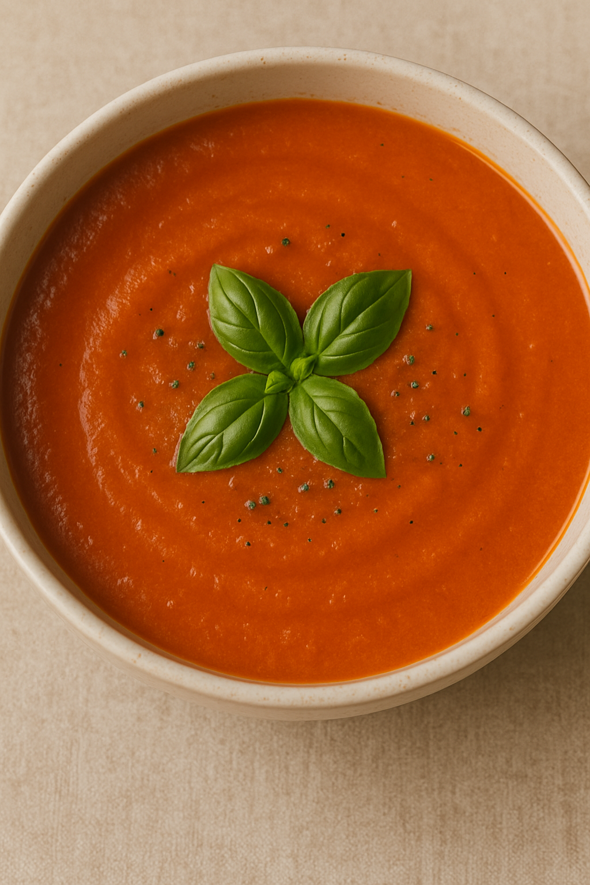

Tomato Basil Soup

Roasted tomato soup with fresh basil and a savory, silky texture.
Yield: 6–8 servings |
Prep Time: 15 minutes |
Cook Time: ~1 hour 20 minutes
Tomato Basil Soup Ingredients
- 2½ pounds roma tomatoes, halved
- ¼ cup extra-virgin olive oil, divided
- Sea salt and freshly ground black pepper
- 1 medium yellow onion, chopped
- ⅓ cup chopped carrots
- 4 garlic cloves, chopped
- 3 cups vegetable broth
- 1 tablespoon balsamic vinegar
- 1 teaspoon fresh thyme leaves
- 1 loosely packed cup fresh basil leaves, plus more for garnish
Directions
- Preheat oven to 350°F (175°C). Arrange tomatoes cut side up on a parchment-lined baking sheet. Drizzle with 2 tablespoons olive oil, season with salt and pepper, and roast about 1 hour, until edges begin to shrivel.
- In a large pot, heat remaining 2 tablespoons olive oil over medium heat. Add onion, carrots, garlic, and ½ teaspoon salt; cook about 8 minutes, until softened.
- Add roasted tomatoes, vegetable broth, balsamic vinegar, and thyme. Simmer 20 minutes.
- Let cool slightly, then blend the soup until smooth, working in batches if needed. Add basil and pulse just to combine.
- Season to taste, reheat if necessary, and serve garnished with fresh basil leaves.